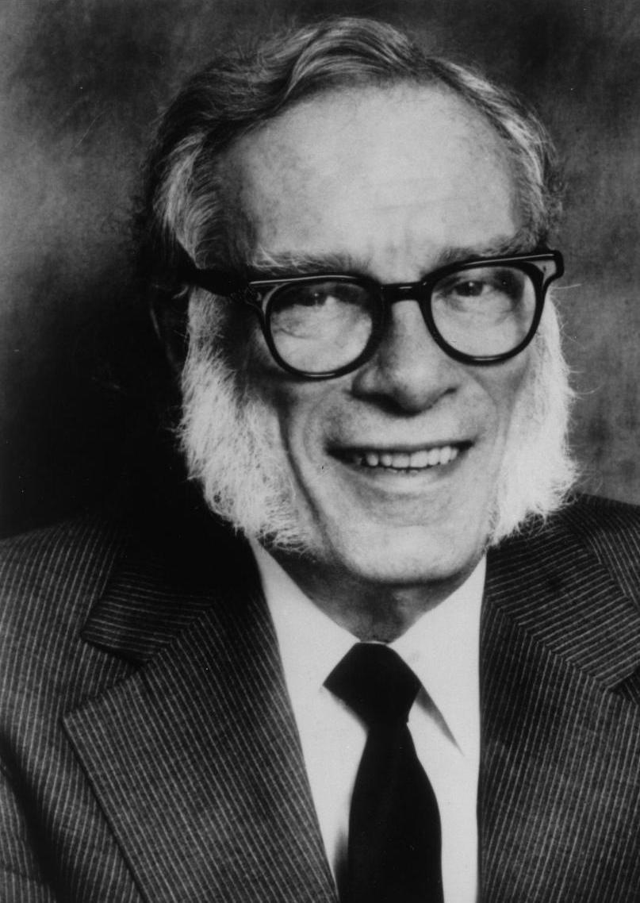
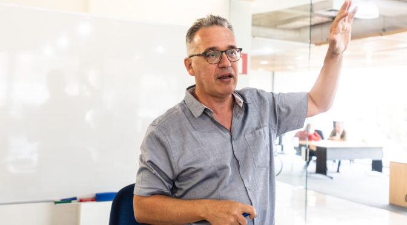

O que é?
da Fundação AsimovO Prêmio Asimov-Brasil é uma distinção para livros de divulgação científica e cultural editados no Brasil. Ele premia anualmente os autores dos livros em disputa bem como os estudantes brasileiros do ensino médio que se inscrevem no evento. São os alunos inscritos, que leram os livros finalistas selecionados pela Comissão Científica, que elegem o livro vencedor através dos seus votos e das suas opiniões. Para participar os alunos devem ler pelo menos um dos livros finalistas, escrever uma resenha do livro e submetê-lá. A Comissão Científica escolhe as melhores resenhas que serão premiadas.
O prêmio homenageia o escritor Isaac Asimov, autor de um número impressionante de obras de divulgação científica, bem como vários romances e contos. Abaixo seguira uma biografia do ator.
O prêmio visa aproximar as gerações mais jovens da cultura científica, através da leitura e da avaliação crítica das obras em competição. A idéia da realização do Prêmio Asimov-Brasil nasceu no Instituto de Estudos Avançados da UNICAMP (IdEA) em setembro de 2019 durante a residência do físico Francesco Vissani.
O professor Vissani iniciou o Prêmio Asimov na Itália em 2016 na cidade de Áquila e atualmente o prêmio envolve quase toda a nação italiana e tem a participação de milhares de estudantes.
“A frase mais empolgante de ouvir em ciência, a que prenuncia novas descobertas, não é 'Eureka!', mas sim 'Isto é estranho...' (Isaac Asimov).”
- Surgiu: Itália 2016
- Edição Itália: quinta
- Edição Brasil: primeira
Nesta primeira edição (piloto) do Prêmio Asimov-Brasil 2020 podem participar escolas e estudantes das cidades de Campinas, Limeira e Jundiaí.
A cerimônia de premiação do livro e das melhores resenhas ocorrerá na Universidade Estadual de Campinas em setembro de 2020.
Isaac Asimov
uma breve biografia.Um dos mais prolíficos escritores do século XX, Isaac Asimov conquistou reconhecimento e sucesso no mercado editorial a partir da década de 1950, quando iniciou a publicação da série de livros de ficção científica “Fundação”.
Nascido em Petrovichi, na Rússia, em 2 de janeiro de 1920, se mudou com a família, em 1923, para os Estados Unidos, onde se naturalizou cidadão norte-americano, vivendo no bairro do Brooklyn, em Nova York.
Frequentando a loja de doces de seu pai, que também vendia jornais e revistas, se tornou um ávido leitor de histórias em periódicos.

Em 1939, publicou seus primeiros contos em revistas de ficção científica, tendo seus primeiros livros sido lançados em 1950. Graduado em Química, em 1939, doutorou-se pela Universidade de Columbia, em 1948, e desenvolveu uma carreira acadêmica na Universidade de Boston, antes de se dedicar integralmente à literatura. Foi autor de cerca de 500 livros e de centenas de contos ao longo da carreira, em gêneros diversos, como romances de ficção científica e de suspense, divulgação científica para jovens e para adultos, crítica literária, ensaios sobre religião, humor e autobiografia.
Morreu, em 6 de abril de 1992, em razão de complicações causadas pelo vírus da Aids, que contraiu durante uma transfusão de sangue decorrente de uma cirurgia cardíaca.